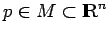

Inhalt Index DeskTop Bronstein

 Dynamische Systeme und Chaos Gewöhnliche Differentialgleichungen und Abbildungen Qualitative Theorie gewöhnlicher Differentialgleichungen Stabilitätstheorie
Dynamische Systeme und Chaos Gewöhnliche Differentialgleichungen und Abbildungen Qualitative Theorie gewöhnlicher Differentialgleichungen Stabilitätstheorie


Eine skalarwertige Funktion V heißt positiv definit in einer Umgebung U des Punktes , wenn gilt:
| Beispiel |
|
Der Punkt (0,0) ist Ruhelage der ebenen Differentialgleichung . Mit V (x,y) = x2+y2 liegt eine Funktion vor, die positiv definit in jeder Umgebung von (0,0) ist und für deren Ableitung entlang einer beliebigen Lösung für gilt. Also ist (0,0) asymptotisch stabil. |